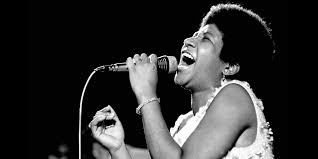
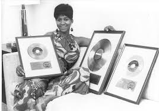

ARETHRA FRANKLIN

Aretha Louise Franklin (March 25, 1942 – August 16, 2018) was an American singer, songwriter, actress, pianist, and civil rights activist. Franklin began her career as a child singing gospel at New Bethel Baptist Church in Detroit, Michigan, where her father C. L. Franklin was a minister.
Born: 25 March 1942, Memphis, Tennessee, United States
Died: 16 August 2018, Detroit, Michigan, United States
Albums: Amazing Grace, MORE
Children: Teddy Richards, Kecalf Cunningham, Edward Franklin, Clarence Franklin
ALBUMS:
“Never Grow Old”,
“You Grow Closer”,
“Today I Sing The Blues”,
“Won’t Be Long”,
“Are You Sure”,
“Operation Heartbreak”,
“Skylark”,
“Runnin’ Out Of Fools”,
“One Step Ahead”,
“(No, No) I’m Losing You”,
“Cry Like A Baby”,
“A Little Bit Of Soul”,
“My Kind Of Town (Detroit Is)” ,
“Try A Little Tenderness” ,
“I Never Loved A Man (The Way I Love You)”,
“Do Right Woman – Do Right Man”,
“Respect”,
“A Change Is Gonna Come”,
“Chain Of Fools” – Alternate Version,
“(I Can’t Get No) Satisfaction” – UK Single Version,
“(Sweet Sweet Baby) Since You’ve Been Gone”,
“Ain’t No Way”,
“My Song”,
“You Send Me”,
“The House That Jack Built”,
“Tracks Of My Tears”

AWARDS:
Kennedy Center Honors
1994
Grammy Hall of Fame
2009, 2001, 1999, ... · I Never Loved a Man the Way I Love You, Chain of Fools, Amazing Grace, ...
Grammy Lifetime Achievement Award
1994
American Music Award for Favorite Album Soul
1983 · Jump to It
Grammy Award for Best Performance by a Duo or Group with Vocals
1988 · I Knew You Were Waiting
Grammy Award for Best Performance
1968 · Respect
Grammy Award for Best Female Vocal Performance
1988, 1986, 1982, ... · Aretha, Freeway Of Love, Hold On, I'm Comin', ...
Grammy Award for Best Traditional Performance
2006, 2004 · A House is not a Home, Wonderful
Grammy Legend Award
1992
Pulitzer Prize Special Citations and Awards
2019
Grammy Award for Best Gospel/Contemporary Christian Music Performance
2008 · Never Gonna Break My Faith
NAACP Image Award – Hall of Fame Award 1997
NAACP Image Award – Vanguard Award 2008
Rhythm and Blues Foundation Pioneer Award for Lifetime Achievement 1992
Grammy Award for Best Soul Gospel Performance 1973 · Amazing Grace
The BET Honors Award for Musical Arts 2014